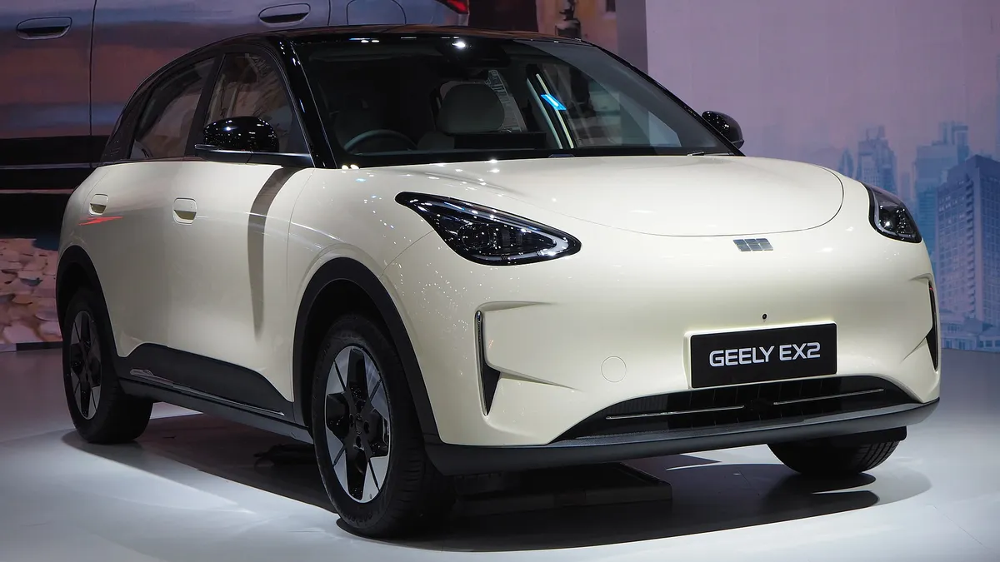
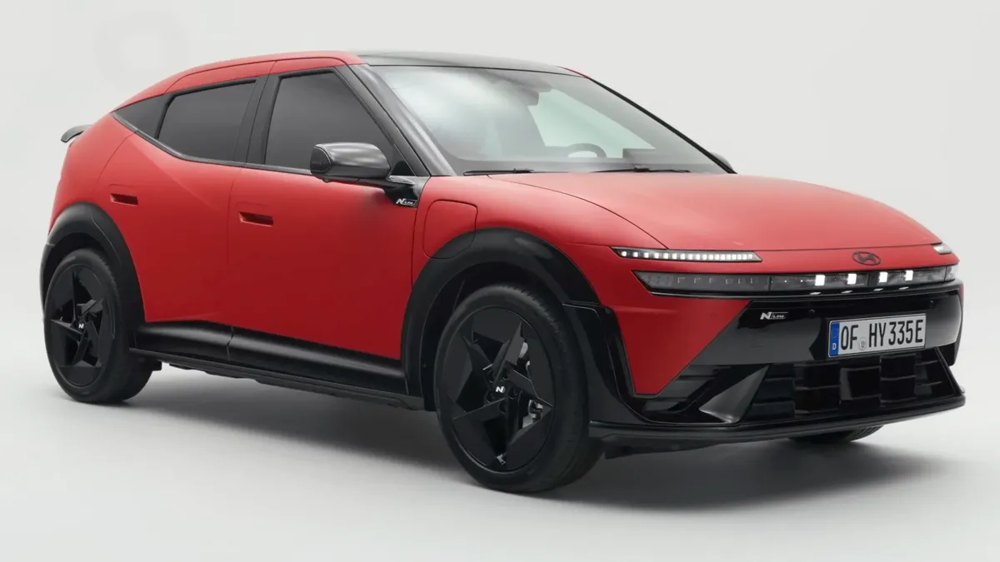
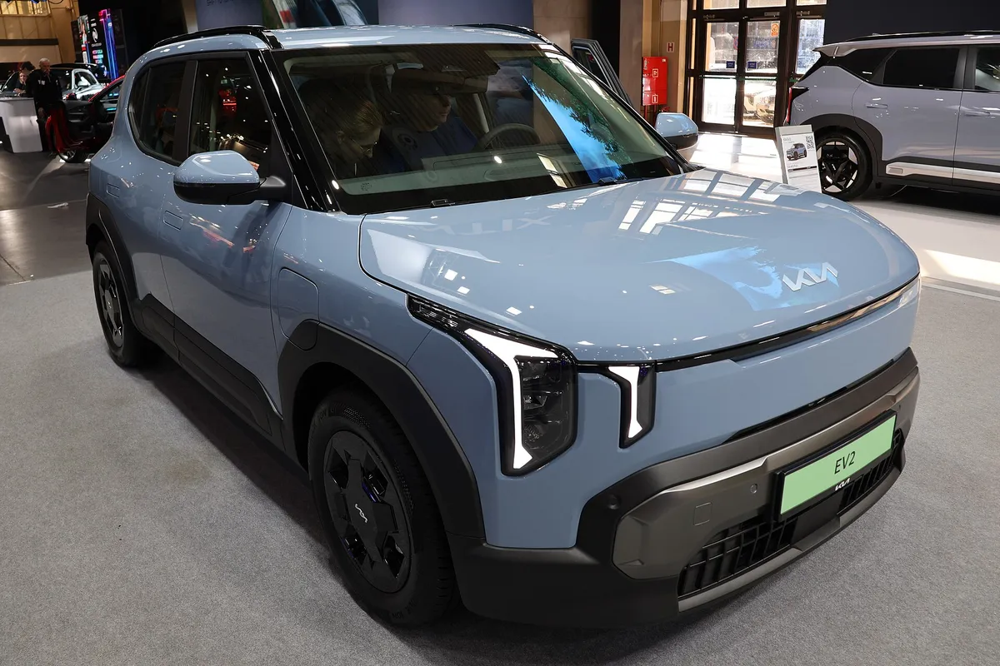
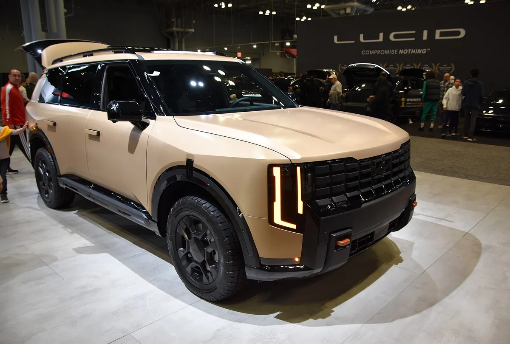
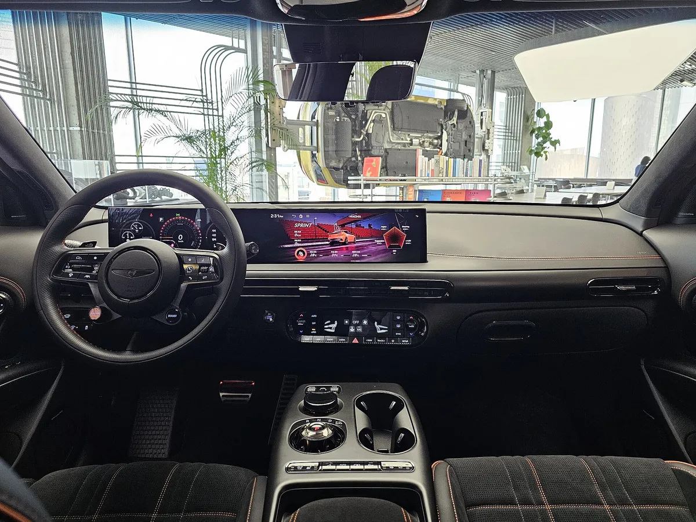
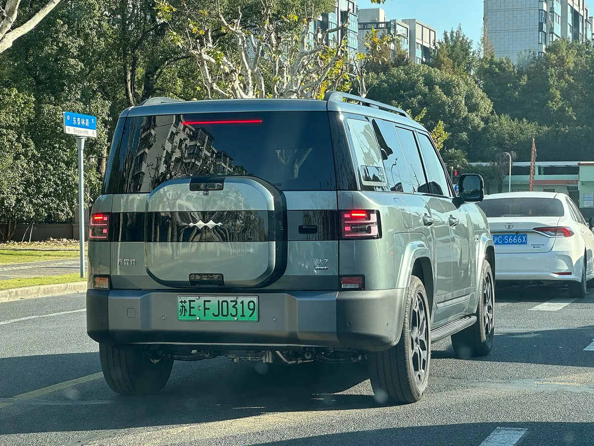

▲ 2027 월드 카 어워즈 후보로 거론된 립모터 브랜드의 C10 ⓒ Wikimedia Commons
"후보 56대 가운데 27대가 중국차." 2027 월드 카 어워즈(World Car Awards)가 9월 시즌을 열면서 공개한 첫 후보 명단이 자동차업계의 세력 변화를 그대로 보여줬다. 카스쿱스(Carscoops)는 이를 두고 "월드 카 오브 더 이어 후보의 절반이 중국차"라고 보도했고, 오토블로그(Autoblog) 등 다른 매체도 "절반에 가깝다"고 전했다.
1. 56대 중 27대 — 숫자로 본 2027 후보 명단
월드 카 어워즈는 전 세계 자동차 전문 기자단이 투표로 뽑는 상으로, 올해로 23번째 시즌을 맞았다. 공식 타임라인에 따르면 9월 공식 시즌이 시작됐고, 카스쿱스가 정리한 1차 후보는 모두 56대다. 이 가운데 중국 브랜드 차량이 27대로 약 48%를 차지한다.
| 항목 | 내용 |
|---|---|
| 1차 후보 수 | 56대 (월드 카 오브 더 이어 부문) |
| 중국 브랜드 후보 | 27대 — 약 절반 (카스쿱스·오토블로그·차이나EV홈 공통 보도) |
| 주요 중국 브랜드 | BYD, 체리, 지리, 립모터, 지커, 샤오펑, GAC 아이온, Deepal, 엑시드, 링크앤코 등 |
| 세부 부문 | 월드 카 오브 더 이어 외에 월드 어반 카·럭셔리 카·퍼포먼스 카 후보 별도 (EV·디자인 부문 후보는 추후 확정) |
| 자격 요건 | 연 1만 대 이상 생산, 주요 시장 럭셔리 가격대 미만, 2026년 1월 1일~2027년 3월 19일 사이 2개 대륙 2개 이상 주요 시장 판매 |
📍 '절반'의 기준은 어디까지인가
카스쿱스는 "절반"이라고 표현했고 오토블로그는 "거의 절반"이라고 썼다. 27대를 56대로 나누면 48.2%라 어느 표현도 틀리지 않다. 다만 세부 부문(어반·럭셔리·퍼포먼스)에 중복 출품된 차량이 있어, 부문별 목록을 단순 합산하면 숫자가 달라질 수 있다.
2. 어떤 중국차가 후보에 올랐나
차이나EV홈이 정리한 후보 목록에는 BYD Ti7, 창안 네보 Q05, 체리 Q, Deepal S05·S07, 엑시드 엑슬란틱스 ET·RX, GAC 아이온 UT·V, 지리 EX2·스트레이 EM-i, 아이카(iCAUR) v23 등이 포함됐다. 립모터 B10·C10·T03, 링크앤코 900, MG4 EV 어반, 오모다 4, 온보(Onvo) L90, 샤오펑 G6·L03·P7+, 지커 8X, 젯투어 G700·T2, 립파스 L6 EV·L8 PHEV도 이름을 올렸다. 아래 목록은 WCA 공식 후보표를 직접 대조했으며, 27대 집계와 일치한다.
▲ 후보 명단에 오른 립모터 브랜드의 C10. 립모터는 B10·C10·T03 등 3개 차종이 후보로 거론됐다 ⓒ Wikimedia Commons
| 부문 | 중국 브랜드 후보 |
|---|---|
| 월드 카 오브 더 이어 | BYD Ti7, 창안 네보 Q05, 체리 Q, 오모다 4, Deepal S05·S07, 엑시드 엑슬란틱스 ET·RX, GAC 아이온 UT·V, 지리 EX2·스트레이 EM-i, 립모터 B10·C10·T03, 립파스(Lepas) L6 EV·L8 PHEV, 링크앤코 900, 아이카 v23, 젯투어 G700·T2, MG4 EV 어반, 온보 L90, 샤오펑 G6·L03·P7+, 지커 8X |
| 월드 어반 카 | 체리 Q, 엑시드 엑슬란틱스 ET, 지리 EX2, 아이카 v23, 립모터 T03 |
| 월드 럭셔리 카 | 아바트르 06·07·12, 덴자 BAO 5, 샤오펑 G9·G9L·X9, 지커 9X |
| 월드 퍼포먼스 카 | 링크앤코 02, 지커 7GT |
눈에 띄는 것은 후보의 성격이다. 전기차 일색이던 과거와 달리 지리 스트레이 EM-i, 립파스 L8 PHEV(차명에 PHEV 명기)처럼 플러그인 하이브리드 모델이 후보에 포함됐고, 체리 Q·지리 EX2·립모터 T03 같은 소형 전기차도 어반 부문의 주력으로 자리 잡았다. 파워트레인별 세부 구분은 각 제조사 공식 발표를 확인해야 한다.
3. 부문별 공식 후보 — 어반·럭셔리·퍼포먼스
월드 카 어워즈는 메인 부문 외에 어반, 럭셔리, 퍼포먼스 등 세부 부문의 후보를 따로 공개했다. 공식 후보표를 확인하면 부문마다 성격이 뚜렷하다. 어반 카는 전장 4.25m 이하 차량이 대상이고, 퍼포먼스 카는 연 1,000대 이상 생산에 '뚜렷한 성능 지향' 성격이 요구된다. 럭셔리 카는 연 5,000대 이상 생산에 럭셔리 가격대 차량이 대상이다.
| 부문 | 후보 수 | 후보 차종 |
|---|---|---|
| 월드 어반 카 | 11대 | 체리 Q, 쿠프라 라발, 엑시드 엑슬란틱스 ET, 지리 EX2, 현대 바이온, 현대 아이오닉 3, 아이카 v23, 기아 EV2, 기아 시로스 EV, 립모터 T03, 메르세데스-벤츠 GLA |
| 월드 럭셔리 카 | 18대 | 아우디 Q7·Q9, 아바트르 06·07·12, BMW X5, 덴자 BAO 5, 제네시스 GV80 하이브리드, 재규어 Type 01, 폴스타 5, 포르쉐 카이엔 일렉트릭, 레인지로버 EV·GT·스포츠 EV, 샤오펑 G9·G9L·X9, 지커 9X |
| 월드 퍼포먼스 카 | 13대 | 알핀 A390 GTS, 캐딜락 OPTIQ-V, 쉐보레 콜벳 ZR1·ZR1X, 제네시스 GV60 마그마, 기아 EV3 GT·EV4 GT·EV5 GT, 로터스 엘레트레 X, 링크앤코 02, 메르세데스-AMG 일렉트릭 GT 4도어 쿠페, 포르쉐 카이엔 터보 일렉트릭, 지커 7GT |
📍 세부 부문에서도 중국 브랜드는 눈에 띈다
어반 부문 11대 중 5대(체리 Q, 엑시드 엑슬란틱스 ET, 지리 EX2, 아이카 v23, 립모터 T03), 럭셔리 18대 중 8대(아바트르 3종, 덴자 BAO 5, 샤오펑 3종, 지커 9X), 퍼포먼스 13대 중 2대(링크앤코 02, 지커 7GT)가 중국 브랜드로 확인된다. 다만 브랜드 소속 판단(예: 덴자·아바트르의 모회사)은 매체마다 표기가 달라 여기서는 공식 명단의 브랜드명 기준으로만 분류했다. WCA는 일부 차량이 가격 정보에 따라 부문을 옮길 수 있다고 안내하고 있다.

▲ 월드 카 오브 더 이어와 어반 카 부문에 이름을 올린 지리 EX2 ⓒ Wikimedia Commons
4. 현대·기아·제네시스는 몇 대나 후보인가
한국 브랜드도 후보에 올랐다. WCA 공식 후보표를 직접 확인한 결과, 메인 부문에는 현대 2종(아이오닉 3·바이온), 기아 4종(EV2·시로스 EV·셀토스·텔루라이드)이 있고, 제네시스는 럭셔리 부문에 GV80 하이브리드, 퍼포먼스 부문에 GV60 마그마가 올랐다. 기아는 퍼포먼스 부문에도 EV3 GT·EV4 GT·EV5 GT 3종이 포함됐다. 초기 보도(차이나EV홈 등)는 목록이 일부 달랐지만 이 표가 공식 명단이다. 참고로 일부 매체 요약에 등장한 '현대 투싼'은 공식 후보표에서 확인되지 않아 본문에서 제외했다.
| 브랜드 | 후보 차종 | 출품 부문 |
|---|---|---|
| 현대 | 아이오닉 3, 바이온 | 월드 카 오브 더 이어 + 월드 어반 카 (두 차종 모두 양쪽에 등록) |
| 기아 | EV2, 시로스 EV, 셀토스, 텔루라이드 | 월드 카 오브 더 이어 / EV2·시로스 EV는 월드 어반 카에도 등록 |
| 기아 | EV3 GT, EV4 GT, EV5 GT | 월드 퍼포먼스 카 |
| 제네시스 | GV80 하이브리드 | 월드 럭셔리 카 |
| 제네시스 | GV60 마그마 | 월드 퍼포먼스 카 |

▲ 메인·어반 부문 후보에 오른 현대 아이오닉 3(사진은 유럽 사양 N 라인) ⓒ Wikimedia Commons

▲ 메인·어반 부문 후보인 기아 EV2(2026 포즈난 모터쇼 전시차) ⓒ Wikimedia Commons

▲ 메인 부문 후보에 오른 기아 텔루라이드(북미형 2026년형 X-Pro 전시차) ⓒ Wikimedia Commons

▲ 퍼포먼스 부문 후보인 제네시스 GV60 마그마의 실내 ⓒ Wikimedia Commons
📍 국내 판매 차종과 후보 차종이 다를 수 있다
월드 카 어워즈 후보는 글로벌 시장 기준이라 국내 판매 사양과 다를 수 있다. 예컨대 텔루라이드는 북미 중심 모델이고, 바이온은 유럽 등 해외 시장 중심으로 판매되는 소형 SUV다. 각 차종의 국내 출시·판매 여부는 별도로 확인이 필요하다.
5. 왜 중국차가 이렇게 늘었나
후보 확대의 배경으로는 해외 판매 시장 확대가 거론된다. 월드 카 어워즈 자격은 '중국·유럽·인도·일본·한국·중남미·미국 중 2개 이상 주요 시장, 2개 대륙에서의 판매'인데, BYD·체리·지리·립모터·지커·샤오펑 등이 유럽·중남미·동남아·중동 등에서 판매망을 넓히면서 이 문턱을 넘는 차종이 늘었다는 해석이 가능하다. 이는 필자의 해석이며 인용 매체가 직접 밝힌 인과관계는 아니고, 수상 가능성을 뜻하지도 않는다.
✅ 후보 자격, 이것만 알면 된다 (WCA 공식 후보표 기준)
· 메인 부문: 연간 1만 대 이상 생산, 주요 시장에서 럭셔리 가격대 미만
· 판매 조건: 중국·유럽·인도·일본·한국·중남미·미국 중 2개 대륙 2개 이상 주요 시장에서 2026년 1월 1일~2027년 3월 19일 사이 판매
· 럭셔리 부문은 연 5,000대 이상·럭셔리 가격대, 퍼포먼스 부문은 연 1,000대 이상·성능 지향, 어반 부문은 전장 4.25m 이하
· 후보가 되었다는 것만으로 수상이 보장되지 않으며, 기자단 투표로 톱10 → 톱3 → 최종 수상작이 가려진다

▲ 메인 부문 후보 BYD Ti7은 중국 내수명 '방청바오 타이 7'을 해외 시장용 BYD 브랜드로 판매하는 모델이다(사진은 중국 현지 방청바오 Ti7) ⓒ Wikimedia Commons
6. 앞으로의 일정 — 톱10은 1월 5일
월드 카 어워즈 공식 타임라인은 다음과 같다. 기자단은 10월 파리 모터쇼 시즌부터 시승·심사를 이어 가며 11월에는 미국 캘리포니아 패서디나에서 열리는 LA 시승 행사(11월 16~18일)에 참여한다.
| 일정 | 내용 |
|---|---|
| 2026년 9월 | 23번째 시즌 공식 시작, 1차 후보 56대 공개 |
| 10월 12일 | 파리 모터쇼에서 월드 카 어워즈 행사 |
| 11월 16~18일 | 미국 패서디나 LA 시승 행사 |
| 12월 28일 | 1차 투표 마감 |
| 2027년 1월 5일 | 월드 카 오브 더 이어 톱10, 럭셔리·퍼포먼스·어반·디자인 부문 톱5 발표 |
| 2월 16일 | 2차 투표 마감 |
| 2월 26~28일 | 부문별 톱3 발표 |
| 3월 24일 | 뉴욕 국제오토쇼에서 최종 수상작 발표 |
월드 EV·월드 카 디자인 부문 후보는 아직 확정되지 않았다. 1월 5일 톱10에서 중국차가 몇 대나 살아남는지가 진짜 관전 포인트다.
7. 요약
2027 월드 카 어워즈 1차 후보 56대 중 27대가 중국 브랜드 차량이다. BYD·체리·지리·립모터·지커·샤오펑·GAC 등이 대거 이름을 올려 세계 자동차 시장의 중심축이 이동하고 있음을 보여준다.
한국 브랜드는 WCA 공식 후보표 기준 현대 아이오닉 3·바이온, 기아 EV2·시로스 EV·셀토스·텔루라이드(메인), 기아 EV3·EV4·EV5 GT와 제네시스 GV60 마그마(퍼포먼스), 제네시스 GV80 하이브리드(럭셔리)가 후보다. 이 명단은 1차 후보이므로 톱10은 2027년 1월 5일 발표에서 확인해야 한다.
최종 수상작은 2027년 3월 24일 뉴욕 국제오토쇼에서 발표된다. 후보 진입과 수상은 별개이므로, 톱10과 톱3 발표를 지켜보는 것이 순서다.